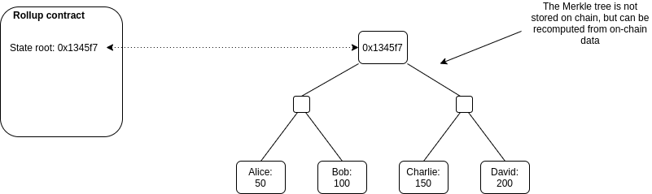
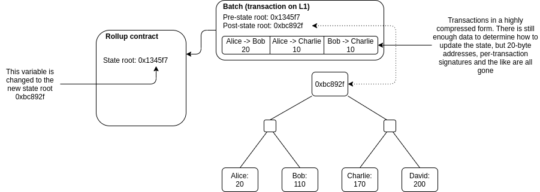
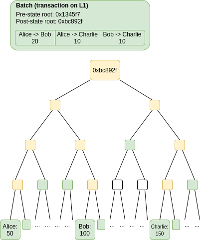

An Incomplete Guide to Rollups
2021 Jan 05
See all posts
An Incomplete Guide to Rollups
Rollups are all the rage in the Ethereum community, and are poised
to be the key scalability solution for Ethereum for the foreseeable
future. But what exactly is this technology, what can you expect from it
and how will you be able to use it? This post will attempt to answer
some of those key questions.
Background: what
is layer-1 and layer-2 scaling?
There are two ways to scale a blockchain ecosystem. First,
you can make the blockchain itself have a higher transaction
capacity. The main challenge with this technique is that
blockchains with "bigger blocks" are inherently more difficult to verify
and likely to become more centralized. To avoid such risks, developers
can either increase the efficiency of client software or, more
sustainably, use techniques such as sharding to
allow the work of building and verifying the chain to be split up across
many nodes; the effort known as
"eth2" is currently building this upgrade to Ethereum.
Second, you can change the way that you use the
blockchain. Instead of putting all activity on the
blockchain directly, users perform the bulk of their activity off-chain
in a "layer 2" protocol. There is a smart contract on-chain, which only
has two tasks: processing deposits and withdrawals, and verifying proofs
that everything happening off-chain is following the rules. There are
multiple ways to do these proofs, but they all share the property that
verifying the proofs on-chain is much cheaper than doing the original
computation off-chain.
State channels vs plasma vs
rollups
The three major types of layer-2 scaling are state channels, Plasma and rollups. They are three
different paradigms, with different strengths and weaknesses, and at
this point we are fairly confident that all layer-2 scaling falls into
roughly these three categories (though naming controversies exist at the
edges, eg. see "validium").
How do channels work?
See also: https://www.jeffcoleman.ca/state-channels
and statechannels.org
Imagine that Alice is offering an internet connection to Bob, in
exchange for Bob paying her $0.001 per megabyte. Instead of making a
transaction for each payment, Alice and Bob use the following layer-2
scheme.
First, Bob puts $1 (or some ETH or stablecoin equivalent) into a
smart contract. To make his first payment to Alice, Bob signs a "ticket"
(an off-chain message), that simply says "$0.001", and sends it to
Alice. To make his second payment, Bob would sign another ticket that
says "$0.002", and send it to Alice. And so on and so forth for as many
payments as needed. When Alice and Bob are done transacting, Alice can
publish the highest-value ticket to chain, wrapped in another signature
from herself. The smart contract verifies Alice and Bob's signatures,
pays Alice the amount on Bob's ticket and returns the rest to Bob. If
Alice is unwilling to close the channel (due to malice or technical
failure), Bob can initiate a withdrawal period (eg. 7 days); if Alice
does not provide a ticket within that time, then Bob gets all his money
back.
This technique is powerful: it can be adjusted to handle
bidirectional payments, smart contract relationships (eg. Alice and Bob
making a financial contract inside the channel), and composition (if
Alice and Bob have an open channel and so do Bob and Charlie, Alice can
trustlessly interact with Charlie). But there are limits to what
channels can do. Channels cannot be used to send funds off-chain to
people who are not yet participants. Channels cannot be used to
represent objects that do not have a clear logical owner (eg. Uniswap).
And channels, especially if used to do things more complex than simple
recurring payments, require a large amount of capital to be locked
up.
How does plasma work?
See also: the original Plasma paper,
and Plasma
Cash.
To deposit an asset, a user sends it to the smart contract managing
the Plasma chain. The Plasma chain assigns that asset a new unique ID
(eg. 537). Each Plasma chain has an operator (this could be a
centralized actor, or a multisig, or something more complex like PoS or
DPoS). Every interval (this could be 15 seconds, or an hour, or anything
in between), the operator generates a "batch" consisting of all of the
Plasma transactions they have received off-chain. They generate a Merkle
tree, where at each index X in the tree, there is a
transaction transferring asset ID X if such a transaction
exists, and otherwise that leaf is zero. They publish the Merkle root of
this tree to chain. They also send the Merkle branch of each index
X to the current owner of that asset. To withdraw an asset,
a user publishes the Merkle branch of the most recent transaction
sending the asset to them. The contract starts a challenge period,
during which anyone can try to use other Merkle branches to invalidate
the exit by proving that either (i) the sender did not own the asset at
the time they sent it, or (ii) they sent the asset to someone else at
some later point in time. If no one proves that the exit is fraudulent
for (eg.) 7 days, the user can withdraw the asset.
Plasma provides stronger properties than channels: you can send
assets to participants who were never part of the system, and the
capital requirements are much lower. But it comes at a cost: channels
require no data whatsoever to go on chain during "normal operation", but
Plasma requires each chain to publish one hash at regular intervals.
Additionally, Plasma transfers are not instant: you have to wait for the
interval to end and for the block to be published.
Additionally, Plasma and channels share a key weakness in common: the
game theory behind why they are secure relies on the idea that each
object controlled by both systems has some logical "owner". If that
owner does not care about their asset, then an "invalid" outcome
involving that asset may result. This is okay for many applications, but
it is a deal breaker for many others (eg. Uniswap). Even systems where
the state of an object can be changed without the owner's consent (eg.
account-based systems, where you can increase someone's balance
without their consent) do not work well with Plasma. This all means that
a large amount of "application-specific reasoning" is required in any
realistic plasma or channels deployment, and it is not possible to make
a plasma or channel system that just simulates the full ethereum
environment (or "the EVM"). To get around this problem, we get to...
rollups.
Rollups
See also: EthHub
on optimistic rollups and ZK
rollups.
Plasma and channels are "full" layer 2 schemes, in that they try to
move both data and computation off-chain. However, fundamental game
theory issues around data availability means that it is impossible
to safely do this for all applications. Plasma and channels get around
this by relying on an explicit notion of owners, but this prevents them
from being fully general. Rollups, on the other hand, are a "hybrid"
layer 2 scheme. Rollups move computation (and state storage)
off-chain, but keep some data per transaction on-chain. To
improve efficiency, they use a whole host of fancy compression tricks to
replace data with computation wherever possible. The result is
a system where scalability is still limited by the data bandwidth of the
underlying blockchain, but at a very favorable ratio: whereas an
Ethereum base-layer ERC20 token transfer costs ~45000 gas, an ERC20
token transfer in a rollup takes up 16 bytes of on-chain space and costs
under 300 gas.
The fact that data is on-chain is key (note: putting data "on IPFS"
does not work, because IPFS does not provide consensus
on whether or not any given piece of data is available; the data
must go on a blockchain). Putting data on-chain and having
consensus on that fact allows anyone to locally process all the
operations in the rollup if they wish to, allowing them to detect fraud,
initiate withdrawals, or personally start producing transaction batches.
The lack of data availability issues means that a malicious or offline
operator can do even less harm (eg. they cannot cause a 1 week
delay), opening up a much larger design space for who has the right to
publish batches and making rollups vastly easier to reason about. And
most importantly, the lack of data availability issues means that there
is no longer any need to map assets to owners, leading to the key reason
why the Ethereum community is so much more excited about rollups than
previous forms of layer 2 scaling: rollups are fully
general-purpose, and one can even run an EVM inside a rollup, allowing
existing Ethereum applications to migrate to rollups with almost no need
to write any new code.
OK, so how exactly does a
rollup work?
There is a smart contract on-chain which maintains a state
root: the Merkle root of the state of the rollup (meaning, the
account balances, contract code, etc, that are "inside" the rollup).

Anyone can publish a batch, a collection of
transactions in a highly compressed form together with the previous
state root and the new state root (the Merkle root after
processing the transactions). The contract checks that the previous
state root in the batch matches its current state root; if it does, it
switches the state root to the new state root.

To support depositing and withdrawing, we add the ability to have
transactions whose input or output is "outside" the rollup state. If a
batch has inputs from the outside, the transaction submitting the batch
needs to also transfer these assets to the rollup contract. If a batch
has outputs to the outside, then upon processing the batch the smart
contract initiates those withdrawals.
And that's it! Except for one major detail: how to do know
that the post-state roots in the batches are correct? If
someone can submit a batch with any post-state root with no
consequences, they could just transfer all the coins inside the rollup
to themselves. This question is key because there are two very different
families of solutions to the problem, and these two families of
solutions lead to the two flavors of rollups.
Optimistic rollups vs ZK
rollups
The two types of rollups are:
- Optimistic rollups, which use fraud
proofs: the rollup contract keeps track of its entire history
of state roots and the hash of each batch. If anyone discovers that one
batch had an incorrect post-state root, they can publish a proof to
chain, proving that the batch was computed incorrectly. The contract
verifies the proof, and reverts that batch and all batches after
it.
- ZK rollups, which use validity
proofs: every batch includes a cryptographic proof called a
ZK-SNARK (eg. using the PLONK protocol), which proves
that the post-state root is the correct result of executing the batch.
No matter how large the computation, the proof can be very quickly
verified on-chain.
There are complex tradeoffs between the two flavors of rollups:
| Fixed gas cost per batch |
~40,000 (a lightweight transaction that mainly just
changes the value of the state root) |
~500,000 (verification of a ZK-SNARK is quite computationally
intensive) |
| Withdrawal period |
~1 week (withdrawals need to be delayed to give time for someone to
publish a fraud proof and cancel the withdrawal if it is
fraudulent) |
Very fast (just wait for the next batch) |
| Complexity of technology |
Low |
High (ZK-SNARKs are very new and mathematically complex
technology) |
| Generalizability |
Easier (general-purpose EVM rollups are already
close to mainnet) |
Harder (ZK-SNARK proving general-purpose EVM execution is much
harder than proving simple computations, though there are efforts (eg.
Cairo)
working to improve on this) |
| Per-transaction on-chain gas costs |
Higher |
Lower (if data in a transaction is only used to
verify, and not to cause state changes, then this data can be left out,
whereas in an optimistic rollup it would need to be published in case it
needs to be checked in a fraud proof) |
| Off-chain computation costs |
Lower (though there is more need for many full
nodes to redo the computation) |
Higher (ZK-SNARK proving especially for general-purpose computation
can be expensive, potentially many thousands of times more expensive
than running the computation directly) |
In general, my own view is that in the short term, optimistic rollups
are likely to win out for general-purpose EVM computation and ZK rollups
are likely to win out for simple payments, exchange and other
application-specific use cases, but in the medium to long term ZK
rollups will win out in all use cases as ZK-SNARK technology
improves.
Anatomy of a fraud proof
The security of an optimistic rollup depends on the idea that if
someone publishes an invalid batch into the rollup, anyone else
who was keeping up with the chain and detected the fraud can publish a
fraud proof, proving to the contract that that batch is invalid and
should be reverted.

A fraud proof claiming that a batch was invalid would contain the
data in green: the batch itself (which could be checked against a hash
stored on chain) and the parts of the Merkle tree needed to prove just
the specific accounts that were read and/or modified by the batch. The
nodes in the tree in yellow can be reconstructed from the nodes in green
and so do not need to be provided. This data is sufficient to execute
the batch and compute the post-state root (note that this is exactly the
same as how stateless
clients verify individual blocks). If the computed post-state root
and the provided post-state root in the batch are not the same, then the
batch is fraudulent.
It is guaranteed that if a batch was constructed incorrectly, and
all previous batches were constructed correctly, then it is
possible to create a fraud proof showing the the batch was constructed
incorrectly. Note the claim about previous batches: if there was more
than one invalid batch published to the rollup, then it is best to try
to prove the earliest one invalid. It is also, of course, guaranteed
that if a batch was constructed correctly, then it is never possible to
create a fraud proof showing that the batch is invalid.
How does compression work?
A simple Ethereum transaction (to send ETH) takes ~110 bytes. An ETH
transfer on a rollup, however, takes only ~12 bytes:
| Nonce |
~3 |
0 |
| Gasprice |
~8 |
0-0.5 |
| Gas |
3 |
0-0.5 |
| To |
21 |
4 |
| Value |
~9 |
~3 |
| Signature |
~68 (2 + 33 + 33) |
~0.5 |
| From |
0 (recovered from sig) |
4 |
| Total |
~112 |
~12 |
Part of this is simply superior encoding: Ethereum's RLP wastes 1
byte per value on the length of each value. But there are also some very
clever compression tricks that are going on:
- Nonce: the purpose of this parameter is to prevent
replays. If the current nonce of an account is 5, the next transaction
from that account must have nonce 5, but once the transaction is
processed the nonce in the account will be incremented to 6 so the
transaction cannot be processed again. In the rollup, we can omit the
nonce entirely, because we just recover the nonce from the pre-state; if
someone tries replaying a transaction with an earlier nonce, the
signature would fail to verify, as the signature would be checked
against data that contains the new higher nonce.
- Gasprice: we can allow users to pay with a fixed
range of gasprices, eg. a choice of 16 consecutive powers of two.
Alternatively, we could just have a fixed fee level in each batch, or
even move gas payment outside the rollup protocol entirely and have
transactors pay batch creators for inclusion through a channel.
- Gas: we could similarly restrict the total gas to a
choice of consecutive powers of two. Alternatively, we could just have a
gas limit only at the batch level.
- To: we can replace the 20-byte address with an
index (eg. if an address is the 4527th address added to the
tree, we just use the index 4527 to refer to it. We would add a subtree
to the state to store the mapping of indices to addresses).
- Value: we can store value in scientific notation.
In most cases, transfers only need 1-3 significant digits.
- Signature: we can use BLS
aggregate signatures, which allows many signatures to be aggregated
into a single ~32-96 byte (depending on protocol) signature. This
signature can then be checked against the entire set of messages and
senders in a batch all at once. The ~0.5 in the table represents the
fact that there is a limit on how many signatures can be combined in an
aggregate that can be verified in a single block, and so large batches
would need one signature per ~100 transactions.
One important compression trick that is specific to ZK rollups is
that if a part of a transaction is only used for verification, and is
not relevant to computing the state update, then that part can be left
off-chain. This cannot be done in an optimistic rollup because that data
would still need to be included on-chain in case it needs to be later
checked in a fraud proof, whereas in a ZK rollup the SNARK proving
correctness of the batch already proves that any data needed for
verification was provided. An important example of this is
privacy-preserving rollups: in an optimistic rollup the ~500 byte
ZK-SNARK used for privacy in each transaction needs to go on chain,
whereas in a ZK rollup the ZK-SNARK covering the entire batch already
leaves no doubt that the "inner" ZK-SNARKs are valid.
These compression tricks are key to the scalability of rollups;
without them, rollups would be perhaps only a ~10x improvement on the
scalability of the base chain (though there are some specific
computation-heavy applications where even simple rollups are powerful),
whereas with compression tricks the scaling factor can go over 100x for
almost all applications.
Who can submit a batch?
There are a number of schools of thought for who can submit a batch
in an optimistic or ZK rollup. Generally, everyone agrees that in order
to be able to submit a batch, a user must put down a large deposit; if
that user ever submits a fraudulent batch (eg. with an invalid state
root), that deposit would be part burned and part given as a reward to
the fraud prover. But beyond that, there are many possibilities:
- Total anarchy: anyone can submit a batch at any
time. This is the simplest approach, but it has some important
drawbacks. Particularly, there is a risk that multiple participants will
generate and attempt to submit batches in parallel, and only one of
those batches can be successfully included. This leads to a large amount
of wasted effort in generating proofs and/or wasted gas in publishing
batches to chain.
- Centralized sequencer: there is a single actor, the
sequencer, who can submit batches (with an exception
for withdrawals: the usual technique is that a user can first submit a
withdrawal request, and then if the sequencer does not process that
withdrawal in the next batch, then the user can submit a
single-operation batch themselves). This is the most "efficient", but it
is reliant on a central actor for liveness.
- Sequencer auction: an auction is held (eg. every
day) to determine who has the right to be the sequencer for the next
day. This technique has the advantage that it raises funds which could
be distributed by eg. a DAO controlled by the rollup (see: MEV
auctions)
- Random selection from PoS set: anyone can deposit
ETH (or perhaps the rollup's own protocol token) into the rollup
contract, and the sequencer of each batch is randomly selected from one
of the depositors, with the probability of being selected being
proportional to the amount deposited. The main drawback of this
technique is that it leads to large amounts of needless capital
lockup.
- DPoS voting: there is a single sequencer selected
with an auction but if they perform poorly token holders can vote to
kick them out and hold a new auction to replace them.
Split batching and
state root provision
Some of the rollups being currently developed are using a "split
batch" paradigm, where the action of submitting a batch of layer-2
transactions and the action of submitting a state root are done
separately. This has some key advantages:
- You can allow many sequencers in parallel to publish batches in
order to improve censorship resistance, without worrying that some
batches will be invalid because some other batch got included
first.
- If a state root is fraudulent, you don't need to revert the entire
batch; you can revert just the state root, and wait for someone to
provide a new state root for the same batch. This gives transaction
senders a better guarantee that their transactions will not be
reverted.
So all in all, there is a fairly complex zoo of techniques that are
trying to balance between complicated tradeoffs involving efficiency,
simplicity, censorship resistance and other goals. It's still too early
to say which combination of these ideas works best; time will tell.
How much scaling do
rollups give you?
On the existing Ethereum chain, the gas limit is 12.5 million, and
each byte of data in a transaction costs 16 gas. This means that if a
block contains nothing but a single batch (we'll say a ZK rollup is
used, spending 500k gas on proof verification), that batch can have (12
million / 16) = 750,000 bytes of data. As shown above, a rollup for ETH
transfers requires only 12 bytes per user operation, meaning that the
batch can contain up to 62,500 transactions. At an average block time of
13 seconds, this
translates to ~4807 TPS (compared to 12.5 million / 21000 / 13 ~= 45 TPS
for ETH transfers directly on Ethereum itself).
Here's a chart for some other example use cases:
| ETH transfer |
12 |
21,000 |
105x |
| ERC20 transfer |
16 (4 more bytes to specify which token) |
~50,000 |
187x |
| Uniswap trade |
~14 (4 bytes sender + 4 bytes recipient + 3 bytes
value + 1 byte max price + 1 byte misc) |
~100,000 |
428x |
| Privacy-preserving withdrawal (Optimistic rollup) |
296 (4 bytes index of root + 32 bytes nullifier + 4
bytes recipient + 256 bytes ZK-SNARK proof) |
~380,000 |
77x |
| Privacy-preserving withdrawal (ZK rollup) |
40 (4 bytes index of root + 32 bytes nullifier + 4
bytes recipient) |
~380,000 |
570x |
Max scalability gain is calculated as (L1 gas cost) /
(bytes in rollup * 16) * 12 million / 12.5 million.
Now, it is worth keeping in mind that these figures are overly
optimistic for a few reasons. Most importantly, a block would almost
never just contain one batch, at the very least because there are and
will be multiple rollups. Second, deposits and withdrawals will continue
to exist. Third, in the short term usage will be low, and so
fixed costs will dominate. But even with these factors taken into
account, scalability gains of over 100x are expected to be the norm.
Now what if we want to go above ~1000-4000 TPS (depending on the
specific use case)? Here is where eth2
data sharding comes in. The sharding proposal opens up a space of 16
MB every 12 seconds that can be filled with any data, and the system
guarantees consensus on the availability of that data. This data space
can be used by rollups. This ~1398k bytes per sec is a 23x improvement
on the ~60 kB/sec of the existing Ethereum chain, and in the longer term
the data capacity is expected to grow even further. Hence, rollups that
use eth2 sharded data can collectively process as much as ~100k TPS, and
even more in the future.
What
are some not-yet-fully-solved challenges in rollups?
While the basic concept of a rollup is now well-understood, we are
quite certain that they are fundamentally feasible and secure, and
multiple rollups have already been deployed to mainnet, there are still
many areas of rollup design that have not been well explored, and quite
a few challenges in fully bringing large parts of the Ethereum ecosystem
onto rollups to take advantage of their scalability. Some key challenges
include:
- User and ecosystem onboarding - not many
applications use rollups, rollups are unfamiliar to users, and few
wallets have started integrating rollups. Merchants and charities do not
yet accept them for payments.
- Cross-rollup transactions - efficiently moving
assets and data (eg. oracle outputs) from one rollup into another
without incurring the expense of going through the base layer.
- Auditing incentives - how to maximize the chance
that at least one honest node actually will be fully verifying an
optimistic rollup so they can publish a fraud proof if something goes
wrong? For small-scale rollups (up to a few hundred TPS) this is not a
significant issue and one can simply rely on altruism, but for
larger-scale rollups more explicit reasoning about this is needed.
- Exploring the design space in between plasma and
rollups - are there techniques that put some
state-update-relevant data on chain but not all of it, and is
there anything useful that could come out of that?
- Maximizing security of pre-confirmations - many
rollups provide a notion of "pre-confirmation" for faster UX, where the
sequencer immediately provides a promise that a transaction will be
included in the next batch, and the sequencer's deposit is destroyed if
they break their word. But the economy security of this scheme is
limited, because of the possibility of making many promises to very many
actors at the same time. Can this mechanism be improved?
- Improving speed of response to absent sequencers -
if the sequencer of a rollup suddenly goes offline, it would be valuable
to recover from that situation maximally quickly and cheaply, either
quickly and cheaply mass-exiting to a different rollup or replacing the
sequencer.
- Efficient ZK-VM - generating a ZK-SNARK proof that
general-purpose EVM code (or some different VM that existing smart
contracts can be compiled to) has been executed correctly and has a
given result.
Conclusions
Rollups are a powerful new layer-2 scaling paradigm, and are expected
to be a cornerstone of Ethereum scaling in the short and medium-term
future (and possibly long-term as well). They have seen a large amount
of excitement from the Ethereum community because unlike previous
attempts at layer-2 scaling, they can support general-purpose EVM code,
allowing existing applications to easily migrate over. They do this by
making a key compromise: not trying to go fully off-chain, but instead
leaving a small amount of data per transaction on-chain.
There are many kinds of rollups, and many choices in the design
space: one can have an optimistic rollup using fraud proofs, or a ZK
rollup using validity proofs (aka. ZK-SNARKs). The sequencer (the user
that can publish transaction batches to chain) can be either a
centralized actor, or a free-for-all, or many other choices in between.
Rollups are still an early-stage technology, and development is
continuing rapidly, but they work and some (notably Loopring, ZKSync and DeversiFi) have already been
running for months. Expect much more exciting work to come out of the
rollup space in the years to come.
An Incomplete Guide to Rollups
2021 Jan 05 See all postsRollups are all the rage in the Ethereum community, and are poised to be the key scalability solution for Ethereum for the foreseeable future. But what exactly is this technology, what can you expect from it and how will you be able to use it? This post will attempt to answer some of those key questions.
Background: what is layer-1 and layer-2 scaling?
There are two ways to scale a blockchain ecosystem. First, you can make the blockchain itself have a higher transaction capacity. The main challenge with this technique is that blockchains with "bigger blocks" are inherently more difficult to verify and likely to become more centralized. To avoid such risks, developers can either increase the efficiency of client software or, more sustainably, use techniques such as sharding to allow the work of building and verifying the chain to be split up across many nodes; the effort known as "eth2" is currently building this upgrade to Ethereum.
Second, you can change the way that you use the blockchain. Instead of putting all activity on the blockchain directly, users perform the bulk of their activity off-chain in a "layer 2" protocol. There is a smart contract on-chain, which only has two tasks: processing deposits and withdrawals, and verifying proofs that everything happening off-chain is following the rules. There are multiple ways to do these proofs, but they all share the property that verifying the proofs on-chain is much cheaper than doing the original computation off-chain.
State channels vs plasma vs rollups
The three major types of layer-2 scaling are state channels, Plasma and rollups. They are three different paradigms, with different strengths and weaknesses, and at this point we are fairly confident that all layer-2 scaling falls into roughly these three categories (though naming controversies exist at the edges, eg. see "validium").
How do channels work?
See also: https://www.jeffcoleman.ca/state-channels and statechannels.org
Imagine that Alice is offering an internet connection to Bob, in exchange for Bob paying her $0.001 per megabyte. Instead of making a transaction for each payment, Alice and Bob use the following layer-2 scheme.
First, Bob puts $1 (or some ETH or stablecoin equivalent) into a smart contract. To make his first payment to Alice, Bob signs a "ticket" (an off-chain message), that simply says "$0.001", and sends it to Alice. To make his second payment, Bob would sign another ticket that says "$0.002", and send it to Alice. And so on and so forth for as many payments as needed. When Alice and Bob are done transacting, Alice can publish the highest-value ticket to chain, wrapped in another signature from herself. The smart contract verifies Alice and Bob's signatures, pays Alice the amount on Bob's ticket and returns the rest to Bob. If Alice is unwilling to close the channel (due to malice or technical failure), Bob can initiate a withdrawal period (eg. 7 days); if Alice does not provide a ticket within that time, then Bob gets all his money back.
This technique is powerful: it can be adjusted to handle bidirectional payments, smart contract relationships (eg. Alice and Bob making a financial contract inside the channel), and composition (if Alice and Bob have an open channel and so do Bob and Charlie, Alice can trustlessly interact with Charlie). But there are limits to what channels can do. Channels cannot be used to send funds off-chain to people who are not yet participants. Channels cannot be used to represent objects that do not have a clear logical owner (eg. Uniswap). And channels, especially if used to do things more complex than simple recurring payments, require a large amount of capital to be locked up.
How does plasma work?
See also: the original Plasma paper, and Plasma Cash.
To deposit an asset, a user sends it to the smart contract managing the Plasma chain. The Plasma chain assigns that asset a new unique ID (eg. 537). Each Plasma chain has an operator (this could be a centralized actor, or a multisig, or something more complex like PoS or DPoS). Every interval (this could be 15 seconds, or an hour, or anything in between), the operator generates a "batch" consisting of all of the Plasma transactions they have received off-chain. They generate a Merkle tree, where at each index
Xin the tree, there is a transaction transferring asset IDXif such a transaction exists, and otherwise that leaf is zero. They publish the Merkle root of this tree to chain. They also send the Merkle branch of each indexXto the current owner of that asset. To withdraw an asset, a user publishes the Merkle branch of the most recent transaction sending the asset to them. The contract starts a challenge period, during which anyone can try to use other Merkle branches to invalidate the exit by proving that either (i) the sender did not own the asset at the time they sent it, or (ii) they sent the asset to someone else at some later point in time. If no one proves that the exit is fraudulent for (eg.) 7 days, the user can withdraw the asset.Plasma provides stronger properties than channels: you can send assets to participants who were never part of the system, and the capital requirements are much lower. But it comes at a cost: channels require no data whatsoever to go on chain during "normal operation", but Plasma requires each chain to publish one hash at regular intervals. Additionally, Plasma transfers are not instant: you have to wait for the interval to end and for the block to be published.
Additionally, Plasma and channels share a key weakness in common: the game theory behind why they are secure relies on the idea that each object controlled by both systems has some logical "owner". If that owner does not care about their asset, then an "invalid" outcome involving that asset may result. This is okay for many applications, but it is a deal breaker for many others (eg. Uniswap). Even systems where the state of an object can be changed without the owner's consent (eg. account-based systems, where you can increase someone's balance without their consent) do not work well with Plasma. This all means that a large amount of "application-specific reasoning" is required in any realistic plasma or channels deployment, and it is not possible to make a plasma or channel system that just simulates the full ethereum environment (or "the EVM"). To get around this problem, we get to... rollups.
Rollups
See also: EthHub on optimistic rollups and ZK rollups.
Plasma and channels are "full" layer 2 schemes, in that they try to move both data and computation off-chain. However, fundamental game theory issues around data availability means that it is impossible to safely do this for all applications. Plasma and channels get around this by relying on an explicit notion of owners, but this prevents them from being fully general. Rollups, on the other hand, are a "hybrid" layer 2 scheme. Rollups move computation (and state storage) off-chain, but keep some data per transaction on-chain. To improve efficiency, they use a whole host of fancy compression tricks to replace data with computation wherever possible. The result is a system where scalability is still limited by the data bandwidth of the underlying blockchain, but at a very favorable ratio: whereas an Ethereum base-layer ERC20 token transfer costs ~45000 gas, an ERC20 token transfer in a rollup takes up 16 bytes of on-chain space and costs under 300 gas.
The fact that data is on-chain is key (note: putting data "on IPFS" does not work, because IPFS does not provide consensus on whether or not any given piece of data is available; the data must go on a blockchain). Putting data on-chain and having consensus on that fact allows anyone to locally process all the operations in the rollup if they wish to, allowing them to detect fraud, initiate withdrawals, or personally start producing transaction batches. The lack of data availability issues means that a malicious or offline operator can do even less harm (eg. they cannot cause a 1 week delay), opening up a much larger design space for who has the right to publish batches and making rollups vastly easier to reason about. And most importantly, the lack of data availability issues means that there is no longer any need to map assets to owners, leading to the key reason why the Ethereum community is so much more excited about rollups than previous forms of layer 2 scaling: rollups are fully general-purpose, and one can even run an EVM inside a rollup, allowing existing Ethereum applications to migrate to rollups with almost no need to write any new code.
OK, so how exactly does a rollup work?
There is a smart contract on-chain which maintains a state root: the Merkle root of the state of the rollup (meaning, the account balances, contract code, etc, that are "inside" the rollup).
Anyone can publish a batch, a collection of transactions in a highly compressed form together with the previous state root and the new state root (the Merkle root after processing the transactions). The contract checks that the previous state root in the batch matches its current state root; if it does, it switches the state root to the new state root.
To support depositing and withdrawing, we add the ability to have transactions whose input or output is "outside" the rollup state. If a batch has inputs from the outside, the transaction submitting the batch needs to also transfer these assets to the rollup contract. If a batch has outputs to the outside, then upon processing the batch the smart contract initiates those withdrawals.
And that's it! Except for one major detail: how to do know that the post-state roots in the batches are correct? If someone can submit a batch with any post-state root with no consequences, they could just transfer all the coins inside the rollup to themselves. This question is key because there are two very different families of solutions to the problem, and these two families of solutions lead to the two flavors of rollups.
Optimistic rollups vs ZK rollups
The two types of rollups are:
There are complex tradeoffs between the two flavors of rollups:
In general, my own view is that in the short term, optimistic rollups are likely to win out for general-purpose EVM computation and ZK rollups are likely to win out for simple payments, exchange and other application-specific use cases, but in the medium to long term ZK rollups will win out in all use cases as ZK-SNARK technology improves.
Anatomy of a fraud proof
The security of an optimistic rollup depends on the idea that if someone publishes an invalid batch into the rollup, anyone else who was keeping up with the chain and detected the fraud can publish a fraud proof, proving to the contract that that batch is invalid and should be reverted.
A fraud proof claiming that a batch was invalid would contain the data in green: the batch itself (which could be checked against a hash stored on chain) and the parts of the Merkle tree needed to prove just the specific accounts that were read and/or modified by the batch. The nodes in the tree in yellow can be reconstructed from the nodes in green and so do not need to be provided. This data is sufficient to execute the batch and compute the post-state root (note that this is exactly the same as how stateless clients verify individual blocks). If the computed post-state root and the provided post-state root in the batch are not the same, then the batch is fraudulent.
It is guaranteed that if a batch was constructed incorrectly, and all previous batches were constructed correctly, then it is possible to create a fraud proof showing the the batch was constructed incorrectly. Note the claim about previous batches: if there was more than one invalid batch published to the rollup, then it is best to try to prove the earliest one invalid. It is also, of course, guaranteed that if a batch was constructed correctly, then it is never possible to create a fraud proof showing that the batch is invalid.
How does compression work?
A simple Ethereum transaction (to send ETH) takes ~110 bytes. An ETH transfer on a rollup, however, takes only ~12 bytes:
Part of this is simply superior encoding: Ethereum's RLP wastes 1 byte per value on the length of each value. But there are also some very clever compression tricks that are going on:
One important compression trick that is specific to ZK rollups is that if a part of a transaction is only used for verification, and is not relevant to computing the state update, then that part can be left off-chain. This cannot be done in an optimistic rollup because that data would still need to be included on-chain in case it needs to be later checked in a fraud proof, whereas in a ZK rollup the SNARK proving correctness of the batch already proves that any data needed for verification was provided. An important example of this is privacy-preserving rollups: in an optimistic rollup the ~500 byte ZK-SNARK used for privacy in each transaction needs to go on chain, whereas in a ZK rollup the ZK-SNARK covering the entire batch already leaves no doubt that the "inner" ZK-SNARKs are valid.
These compression tricks are key to the scalability of rollups; without them, rollups would be perhaps only a ~10x improvement on the scalability of the base chain (though there are some specific computation-heavy applications where even simple rollups are powerful), whereas with compression tricks the scaling factor can go over 100x for almost all applications.
Who can submit a batch?
There are a number of schools of thought for who can submit a batch in an optimistic or ZK rollup. Generally, everyone agrees that in order to be able to submit a batch, a user must put down a large deposit; if that user ever submits a fraudulent batch (eg. with an invalid state root), that deposit would be part burned and part given as a reward to the fraud prover. But beyond that, there are many possibilities:
Split batching and state root provision
Some of the rollups being currently developed are using a "split batch" paradigm, where the action of submitting a batch of layer-2 transactions and the action of submitting a state root are done separately. This has some key advantages:
So all in all, there is a fairly complex zoo of techniques that are trying to balance between complicated tradeoffs involving efficiency, simplicity, censorship resistance and other goals. It's still too early to say which combination of these ideas works best; time will tell.
How much scaling do rollups give you?
On the existing Ethereum chain, the gas limit is 12.5 million, and each byte of data in a transaction costs 16 gas. This means that if a block contains nothing but a single batch (we'll say a ZK rollup is used, spending 500k gas on proof verification), that batch can have (12 million / 16) = 750,000 bytes of data. As shown above, a rollup for ETH transfers requires only 12 bytes per user operation, meaning that the batch can contain up to 62,500 transactions. At an average block time of 13 seconds, this translates to ~4807 TPS (compared to 12.5 million / 21000 / 13 ~= 45 TPS for ETH transfers directly on Ethereum itself).
Here's a chart for some other example use cases:
Max scalability gain is calculated as (L1 gas cost) / (bytes in rollup * 16) * 12 million / 12.5 million.
Now, it is worth keeping in mind that these figures are overly optimistic for a few reasons. Most importantly, a block would almost never just contain one batch, at the very least because there are and will be multiple rollups. Second, deposits and withdrawals will continue to exist. Third, in the short term usage will be low, and so fixed costs will dominate. But even with these factors taken into account, scalability gains of over 100x are expected to be the norm.
Now what if we want to go above ~1000-4000 TPS (depending on the specific use case)? Here is where eth2 data sharding comes in. The sharding proposal opens up a space of 16 MB every 12 seconds that can be filled with any data, and the system guarantees consensus on the availability of that data. This data space can be used by rollups. This ~1398k bytes per sec is a 23x improvement on the ~60 kB/sec of the existing Ethereum chain, and in the longer term the data capacity is expected to grow even further. Hence, rollups that use eth2 sharded data can collectively process as much as ~100k TPS, and even more in the future.
What are some not-yet-fully-solved challenges in rollups?
While the basic concept of a rollup is now well-understood, we are quite certain that they are fundamentally feasible and secure, and multiple rollups have already been deployed to mainnet, there are still many areas of rollup design that have not been well explored, and quite a few challenges in fully bringing large parts of the Ethereum ecosystem onto rollups to take advantage of their scalability. Some key challenges include:
Conclusions
Rollups are a powerful new layer-2 scaling paradigm, and are expected to be a cornerstone of Ethereum scaling in the short and medium-term future (and possibly long-term as well). They have seen a large amount of excitement from the Ethereum community because unlike previous attempts at layer-2 scaling, they can support general-purpose EVM code, allowing existing applications to easily migrate over. They do this by making a key compromise: not trying to go fully off-chain, but instead leaving a small amount of data per transaction on-chain.
There are many kinds of rollups, and many choices in the design space: one can have an optimistic rollup using fraud proofs, or a ZK rollup using validity proofs (aka. ZK-SNARKs). The sequencer (the user that can publish transaction batches to chain) can be either a centralized actor, or a free-for-all, or many other choices in between. Rollups are still an early-stage technology, and development is continuing rapidly, but they work and some (notably Loopring, ZKSync and DeversiFi) have already been running for months. Expect much more exciting work to come out of the rollup space in the years to come.